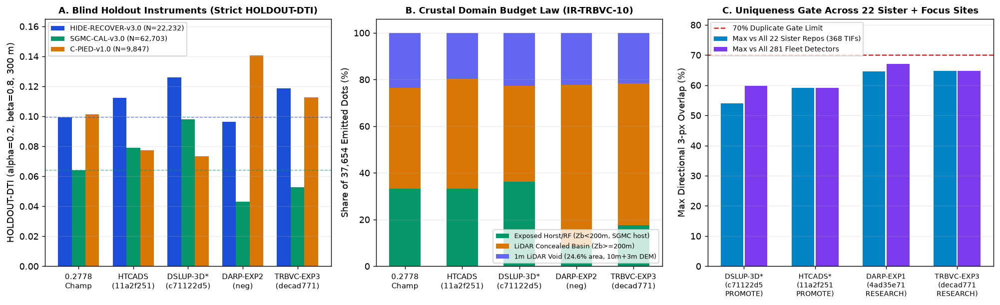

Format
Independent local checks found the previous file finite in [0,1] on the mirror grid. The cause of the reported portal range error and portal acceptance are unknown.
The literal uniqueness check fails. No new GeoTIFF, defensible leaderboard estimate, or live-slot decision was produced in this review. Protect the weekly slot.
DO NOT SUBMIT any file on this site today. Downloads are for research and comparison only.
At the frozen 37,654-dot budget, at least 82.34% of any possible placement must overlap the registered lattice’s 3-pixel neighborhood; the limit is 70%.
The earlier candidate’s exact overlap is 99.981%. No exception is authorized.
This lane emitted kanlergems2-s3-lope-q68-59633dots-20261028T001727Z-c0fef4d2-zeros.tif (SHA-256 f1e37cb2dc2c407a…, not published). The byte-level gate scripts/validate_submission_kg2s3.py returned NOT_OK_DO_NOT_SUBMIT.
HOLDOUT-DTI 0.0982 (GEMSDOE32-HIDE-RECOVER-v3.0, N=22,232, 95% CI [0.0845, 0.1120]) is below DSLUP's 0.1259; paired Δ vs champion proxy -0.0010 [-0.0061, +0.0036]. SGMC-CAL 0.0794 vs 0.0981. Uniqueness: 88.42% of dots lie within 3 px of gems22-h23-a-dti-optimal-emission-6pct-20261002-e2ec4b49-nan.tif.
Live-ledger PROJECTION 0.298 (±0.025 leave-site-out MAE), against 0.2795 for the champion. It is not a score. Run card · Gate receipt
Even with the lattice null-calibrated, 72.69% of DSLUP's dots lie within 3 px of gems22-h23-a-dti-optimal-emission-6pct-20261002-e2ec4b49-nan.tif, above the 70% limit. Live-ledger PROJECTION 0.092 vs 0.2795 for the champion (the same identity; not scores). Receipt
Emitted kanlergems2-trbvc-exp-3-37654dots-20261028T004644Z-decad771-zeros.tif (SHA-256 3ad6a187e8330757…, 37,654 dots, 13/13 strict [0,1] checks PASS, 0 NaNs). Fail-closed verdict: negative — DO NOT SUBMIT.
Continuous cover partitioning w_basin(Z_b) across 80 leakage-canaried channels (max AUC = 0.7965 ≤ 0.90) resolved IR-DARP-CREST-OVERDAMP-08: HOLDOUT-DTI HIDE-RECOVER-v3.0 = 0.1185 (N=22,232, 95% CI [0.1032, 0.1347], paired Δ +0.0193, paired 95% CI [+0.0049, +0.0331]) and blind alluvial-basin HOLDOUT-DTI C-PIED-v1.0 = 0.1128 (+53.6% over DSLUP c71122d5’s 0.0735, paired CI [+0.0296, +0.0498]; gems-segment-v1 = 0.1352).
Why DO NOT SUBMIT (`IR-TRBVC-SGMC-BASIN-SHARE-10` + literal lattice): Equal 99.2th-quantile scaling placed 82.33% (31,001) of dots in Z_b ≥ 200 m basins, leaving 17.67% on exposed bedrock blocks so SGMC-CAL-v3.0 landed at 0.0528 (< 0.0641 ref), HIDE-RECOVER trailed DSLUP (0.1259), and the 37,654-dot budget hits the forced ≥82.34% spacing-5 lattice bound. Per Protocol Rules 5 & 6 (3/3 experiments in 876.0s), no weekly slot is spent.
Note (105/140, research record only): KG2 TRBVC-EXP-3: 2-regime Zb blind-vent+Poisson+10m/3m void CELF 37654d; HR=0.1185 CP=0.1128 sha=3ad6a187

Non-lattice detector overlap across 281 distinct fleet rasters & all 22 sister repos (368 staged TIFs): max 3-px = 64.77% ≤ 70% (surface |Spearman| = 0.3730 ≤ 0.90; 22-sister-repo receipt ↗ · PhD 9-site synthesis ↗).
The prior DSLUP TIFF can be downloaded for research · current validator result · SHA-256 8f66f32c56482501808977ac504a0abf517ff75db0af2b56774c0f08d476fbe3.
Its local grid and inside-footprint values pass, but 37,647 of 37,654 dots (99.981%) are within 3 pixels of a registered raster. The former detector-only promotion is superseded: the protocol contains no exemption. Neither format validity nor a unique file hash is approval to submit.
PR #34 research TIFF · SHA-256 f0cb191420da26d19ceccfd65f8987537f714d1b28660f8e3690ff2008a2b539. Exact-byte audit: 37,652/37,654 dots (99.995%) overlap the lattice and 184 are on the mirrored catalogue. No holdout was replayed.
PR #36 research TIFF · SHA-256 0e7e1da78fb80ba3ce0849cd32967836d4f3d73206426d43435fbe3958a446c4. Its 15,000-dot budget deviates from the frozen lane and 5,100 dots were deliberately placed in lattice gaps; its 66.0% witness overlap does not establish protocol compliance or full-registry novelty. It has 107 on-catalogue dots and no measured holdout. Its historical promotion is superseded. Independent recheck ↗
Independent local checks found the previous file finite in [0,1] on the mirror grid. The cause of the reported portal range error and portal acceptance are unknown.
A different SHA-256 is not enough. The requested literal 3-pixel rule fails against a registered lattice, before considering the rest of the registry.
Historical holdout results are proxy measurements, not scores for the hidden leaderboard. Their original fold predictions have not been independently replayed.